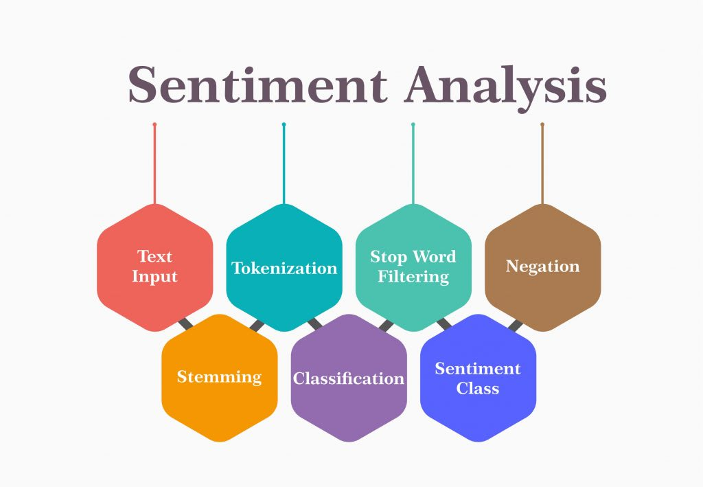
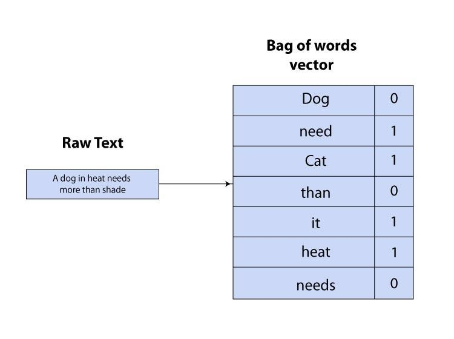
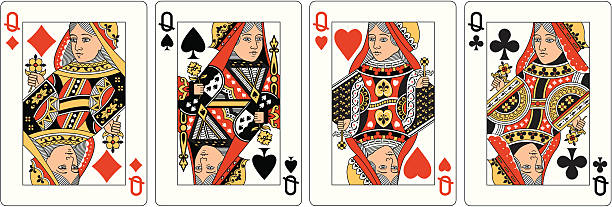
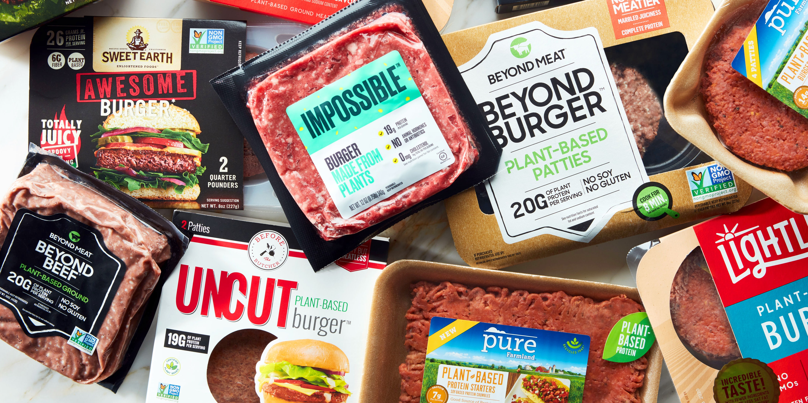
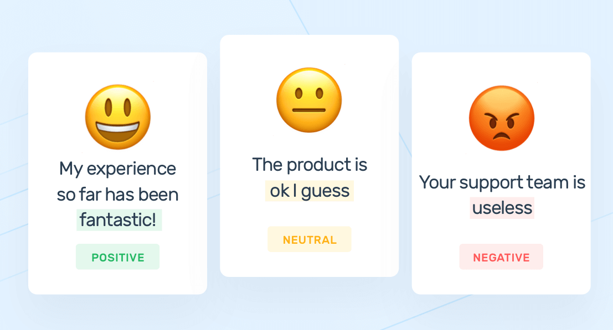

Model and Preprocessing
We cleaned our dataset and used it to train our model

We cleaned our dataset and used it to train our model
Our dataset is a collection of Amazon reviews that we used to train the model. Amazon reviews may contain any type of lexicon including words that are misspelled, abbreviated, capitalized, contain punctuation, etc. The first step is to normalize this lexicon so that items such as “I’m”, “Im”, “i’m” and “im” are not treated as different words.
The first thing we need to do is to split the sentence into a python list of individual tokens or word boundaries that are separated in a smart way in order to process the text.

We could do something simple like split the sentence at each word space. But what about periods at the end of the sentence. We could split the words at a space or period, but what about questions marks and exclamation points? We could split the words at the spaces and a set of predefined punctuation marks, but what about words like “Mr.”. Do we want to keep the period? This is where tokenization comes in. The words are split in a very intelligent way.

Now that we have our tokens, it is necessary to take some time to clean the data so that we have as few repeat entries as possible.


Stop words are words that do not add a lot of meaning to the text such as “the”, “it”, “as” and “about”. They may also include words that are often used sarcastically. This means that they may have their true meaning or the opposite meaning. Hence, they are removed.

The same word may come in many forms, such as: “eat”, “ate”, “eaten”, etc. All of these words can be normalized to what are called lemmas so that they are not treated as separate tokens, but as the same token.
We used a bag of words model in which the featureset was the presence or absence of the 3000 most commonly found words in the text.

Now that we have finished the processing to normalize the data, we need to create our labeled data set. Only reviews of food products from Amazon that were rated as five stars or one star were used. One star reviews were labeled as negative and five star reviews were labeled as positive.
Additionally, there were a great deal more positive reviews than negative reviews so 1000 of each type were randomly selected to ensure there was no bias in the model.

Choose a new feature set by pressing the button.
Note: This will change the statistics about the current model below! And it may take several minutes to complete!
A Python dictionary is used to hold the feature set, which denotes the presence or absence of the 3000 most common words in all of the reviews. Each of the reviews is converted into a dictionary with 3000 entries. Each dictionary key is a one of the 3000 most common words and the value is the boolean value of true or false corresponding to whether or not the review contains the word.

Here are the words that are the most predictive for our current model.
| Most informative Features (Lemmas) | |||||||||
|---|---|---|---|---|---|---|---|---|---|
| {{ features[i][0] }} | {% if i+9 % 10 == 0 %}|||||||||
This is referred to as a “bag of words” model because of the fact that the feature set does not take into account the order of the words, only the presence or absence of each word. For instance, it is very different to say “The meat is good. It is not bad” versus “The meat is bad. It is not good.” However, this difference is not taken into account in our model which only takes into account what words are present, not their order.
Here are the fifteen most predictive words and their percentages for the current model.
| Feature | Sentiment | Certainty |
|---|---|---|
| {{ output_string_to_list[i][0] | upper }}{{ output_string_to_list[i][1:] }} | {% endif %} {% if i % 10 == 3 %}{% if output_string_to_list[i] == "pos" %} Positive {% else %} Negative {% endif %} | {% endif %} {% if i % 10 == 7 %}{{ output_string_to_list[i] }}% |
Now that we have dictionaries of training data we need to understand the model that we selected. We are going to use a Naive Bayes classifier in order to make our predictions.

This formula can be explained in the following example. Imagine we draw a card randomly from a deck of cards. We know that a face card was drawn. We would like to calculate the probability that that card is a queen. Given the formula above, we can caculate this as P(Queen | Face) = P(Face | Queen) * P(Queen) / P(Face).
Clearly P(Face | Queen) is 1 because all queens are face cards. The probability that a queen was chosen is 4/52 because there are four queens in a deck of 52. This can be reduced to 1/13. P(Face) is 12/52 because there are 3 cards * 4 suits = 12. 12/52 can be reduced to 3/13.
Hence, we have P(Queen | Face) = 1 * (1/13) / (3/13) = (1/13) * (13/3) = 1/3 which is clearly correct (4 Queens out of 12 Face cards = 4/12 or 1/3).
We are making a sentiment analyzer which means that we would like the algorithm to be able to classify text as positive or negative. In other words, given a string of text, we would like to know the probability the string of text is positive or negative. A specific example of this may be a sentence like, "Fake meat is delicious". We will do this by comparing P(Positive | Fake meat is delicious) to P(Negative | Fake meat is delicious).
Let's stick with only the positive example as the negative example is calculated in a similar fashion. This can be calculated using the bayes formula in the following way P(Positive | Fake meat is delicious) = P(Fake meat is delcious | Positive) * P(Positive) / P(Fake meat is delicious). However, this the sentence "Fake meat is delicious" may not be in our dataset, so how can we calculate the probability of it?
This is where the naive part of classifier comes into play. Since we do not have data on every sentence possible, we are just going to calculate the probability of each individual word and multiply them together, meaning: P(Positive | fake) * P(Positive | meat) * P(Positive | delicious) (Note: data normalized and stop word deleted). We will certainly have data on all or some of these words.
The final thing we do is just calculate out our probabilities and then multiply them together. (These probabilities are calculated using the same formula. There are many sources online that explain the specific details of how this is done. This article is meant for a general understanding and not specific calculations.)